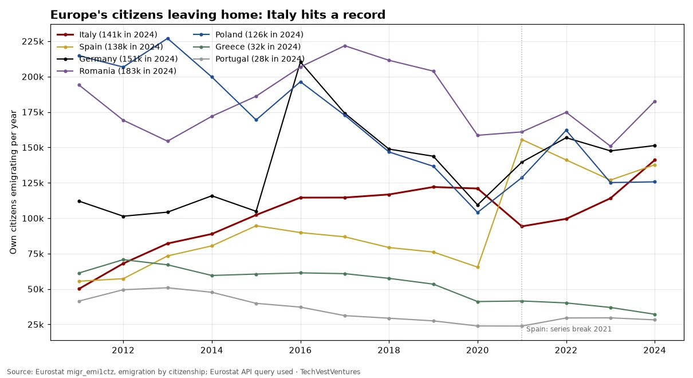
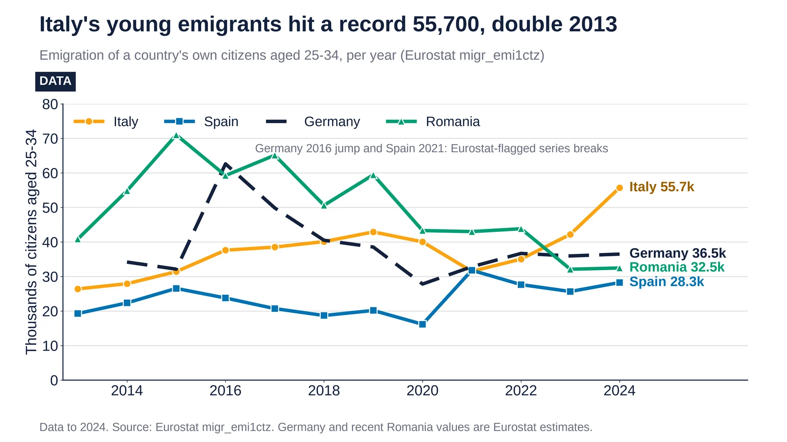
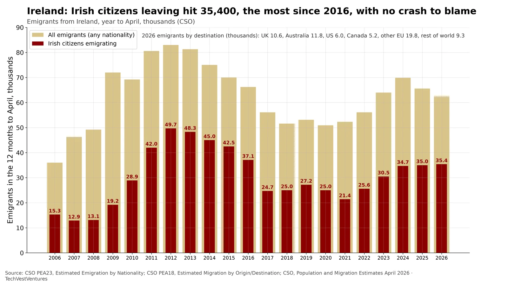

Q2. Europe Emigration

Emigration of each country's own nationals (Eurostat migr_emi1ctz, updated Sep 22, 2026). Italy lost a record 141,056 citizens in 2024, up from 114,057 in 2023 and nearly triple 2011 (50,057). Germany has run at roughly 140,000-160,000 a year since 2021 (Eurostat flags German figures as estimates). Spain's jump in 2021 coincides with a Eurostat-flagged series break, so pre- and post-2021 Spanish values are not comparable. Greece and Portugal, the post-2010 crisis exporters, have fallen back. Counts include returning dual nationals and retirees, not only skilled workers, so 'brain drain' is an upper-bound reading.
Sources: Eurostat migr_emi1ctz, emigration by citizenship Eurostat API query used

Italian citizens aged 25–34 emigrating: 55,724 in 2024, up from 26,414 in 2013. Source: Eurostat migr_emi1ctz.
- 2013: 26,414 Italians aged 25–34 emigrated.
- 2023: 42,216.
- 2024: 55,724, up 32% year on year and the series high.
- 2024 for the others: Germany 36,492 (estimate), Romania 32,469 (estimate), Spain 28,257.

CSO Population and Migration Estimates (Aug 24, 2026). In the year to April 2026, 35,400 Irish citizens emigrated. That is the most since 2016 (37,100) and 65% above 2021 (21,400), though still below the post-crash peak of 49,700 in 2012. Total emigration was 62,500. Australia (11,800) and the UK (10,600) are the top destinations. Unlike 2012, this is not a post-crash exodus. Housing costs are the most cited explanation in Irish debate, but CSO does not survey motives.
Note: CSO estimates are based on the Labour Force Survey and administrative data; they are revised when Census results arrive. Emigration counts people leaving for 12+ months.
Sources: CSO PEA23, Estimated Emigration by Nationality CSO PEA18, Estimated Migration by Origin/Destination CSO, Population and Migration Estimates April 2026